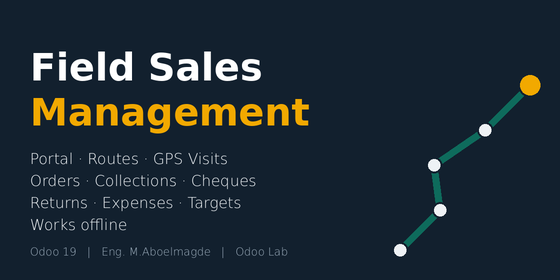
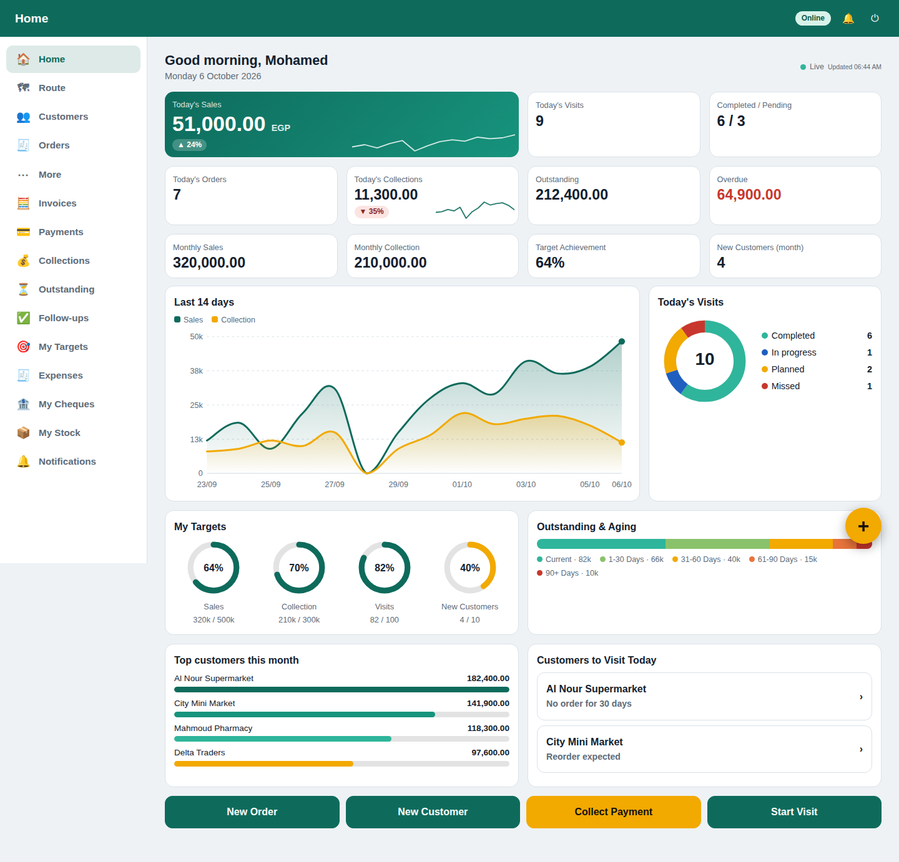

Field Sales Management for Odoo 19
Give every sales representative a fast, mobile-first portal for the whole daily workflow — routes, visits with GPS, orders, collections, cheques, returns, expenses and targets — while Odoo keeps doing the accounting, inventory and sales behind the scenes.
Portal users, not extra licences
Reps work as Odoo Portal users on any phone or PC, with no separate app to install.
Standard Odoo documents
Orders, invoices, payments and transfers are real sale.order, account.move, account.payment and stock.picking records.
Secure per representative
Access rights and record rules, plus permissions each rep can have different from the others.
Arabic and English
Full right-to-left Arabic portal, installable on the home screen, dark-theme ready dashboard.
A live dashboard on every screen
The portal adapts to the device: a full-width layout with a side menu on a computer, and a thumb-friendly layout with a bottom bar on a phone. The home screen counts numbers up, draws a 14-day sales and collection trend, shows today's visits as a donut, target progress as rings, outstanding amounts by age and the top customers, and refreshes itself every minute (with a Live indicator and day-over-day change).

Everything on one smart home screen
Sales, visits, collections, outstanding and overdue amounts, monthly figures and target achievement at a glance. The dashboard also lists the customers worth visiting today and tells the rep why (no visit, no order, overdue invoice, reorder due, missed visit, high-value customer). A floating + button gives one-tap access to the eight daily actions.
Customer 360 on the phone
Contact details with call, WhatsApp and Google Maps buttons; orders, quotations, invoices and payments; outstanding balance with aging buckets and a Collect Payment button on every open invoice; last visit and order dates; total sales and total collected; and the products the customer bought before.
A visit screen built for speed
Start a visit and the GPS position and time are captured once. During the visit the rep sees the customer balance, last order and planned purpose, creates quotations and orders, collects payments, registers returns, adds notes, photos, expenses and follow-ups, then finishes with a required visit result and the next follow-up date. A Next customer button keeps the rep in the flow.
Recurring routes that plan themselves
Assign customers to days and choose a frequency per customer: daily, weekly, every 2 weeks, monthly or every N days. Planned visits are generated a week ahead. Reps can re-order their remaining visits nearest-first from where they stand.
Fast, accurate orders
Pick products from one searchable list or type a name, reference or barcode. Each product shows the customer-pricelist price, discount, free stock and unit of measure, and the products the customer buys most come first. Quotations, orders, invoices and deliveries are standard Odoo documents; discount limits and price changes are controlled per representative.
Collections, receipts and cheques
Register payments against open invoices with the methods you allow per rep. Cheques ask for number, bank, dates and a photo and follow Received > Deposited > Cleared / Returned, visible to the rep. Every payment gets a printable receipt (mobile page and PDF).
Controlled customer returns
Customer > invoice or sales order > product > quantity > reason. The quantity is limited to what was delivered minus what was already returned, reasons are configurable, and the proper Odoo return transfer is created (and validated automatically for trusted reps).
Targets, ranking and follow-ups
Monthly sales, collection, orders, visits and new-customer targets per rep with progress bars and remaining amounts, optional ranking that never exposes other reps' amounts, and a simple follow-up list with today / overdue / upcoming.
Expenses with approval
Fuel, transport, parking, meals and visit expenses with a receipt photo, linked to the customer or visit. Draft > Submitted > Approved / Refused, decided by the manager from the backend, with a notification back to the rep.
Works when the signal does not
An Online / Offline / Syncing indicator is always visible. The day's route and customers are pre-loaded on the device; visits (with device time and GPS), notes, follow-ups, expenses, new customers and quotations are saved locally and synced automatically, never twice.
A live manager dashboard that opens the records
Filter by date, representative, team, route and customer. Sales, collections, visits (completed / planned / missed), conversion, new customers, outstanding and overdue amounts, target achievement, expenses and returns. Numbers count up and refresh by themselves, with a donut of visits, an ageing bar, per-rep cards with target rings, and every number, bar and table cell opens the matching orders, visits, payments or customers.
Built on standard Odoo, secured by design
- Reps never see the backend and only see their own customers, visits, orders, invoices, payments, cheques, expenses and transfers (access rights + record rules, checked on the server).
- Permissions per representative: quotation, order, discount and its own limit, price change, invoice, payment, stock, returns, customers, expenses, ranking and auto-validation can each follow the global default or be overridden for one person.
- Optional approval of customers created from the phone; manager approval of expenses and cheque status changes.
- Audit trail in the chatter of every document: who did what, when and from where (GPS).
- Multi-company aware.
Requirements and installation
- Odoo 19 (Community or Enterprise). Depends on Sales, Inventory, Accounting, Portal, HR and Sales Teams — all standard apps.
- Install the module, set a main warehouse and the payment methods, create a Portal user for each rep, link it to a Sales Representative, assign customers, and create a route. Reps open
/rep on their phone.
- Phone GPS, home-screen installation and offline mode need the site to be served over HTTPS.
Good to know
- Offline: previously opened pages stay readable and visits, notes, follow-ups, expenses, new customers and quotations are queued and synced automatically. Payments, confirmed orders, invoices, returns and stock operations are deliberately online-only so that stock and accounting stay correct. Photos are not saved offline.
- The portal needs no extra user licences beyond Odoo’s Portal access; consult your Odoo contract for your own situation.
- Screenshots show sample data.
نبذة بالعربية
موديول متكامل لإدارة مبيعات المناديب الميدانية على Odoo 19: بوابة للموبايل تغطي يوم المندوب كاملًا — خطوط السير والزيارات بالـ GPS، الطلبات، التحصيل والشيكات، المرتجعات، المصروفات، الأهداف والمتابعات — وكل العمليات تتسجل كمستندات Odoo القياسية (أمر بيع، فاتورة، دفعة، حركة مخزون).
- المندوب يعمل كمستخدم بوابة (Portal) من أي موبايل بدون تطبيق منفصل، والواجهة عربي كاملة من اليمين لليسار.
- صلاحيات مختلفة لكل مندوب، وكل مندوب يرى بياناته فقط.
- Customer 360 وأعمار الديون وتحصيل بضغطة، وإيصال دفع للطباعة، وتتبع الشيكات.
- لوحة تحكم للمدير بفلاتر وكل رقم فيها يفتح السجلات.
- يعمل مع ضعف الإنترنت: الزيارات والملاحظات والمصروفات والعملاء الجدد وعروض الأسعار تُحفظ وتُزامن تلقائيًا.
Author: Eng. M.Aboelmagde · Odoo Lab (YouTube @odoolab) · License: Odoo Proprietary License v1.0 (OPL-1)